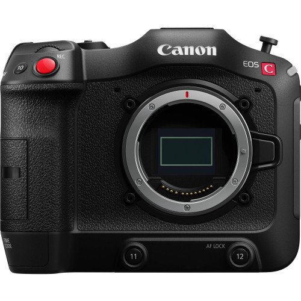

Chất lượng hình ảnh vượt trội
Cảm biến đầu ra tăng cường kép Super35 DGO
Cảm biến Super35 DGO (Dual Gain Output) thế hệ tiếp theo của Canon, cung cấp dải Dynamic Range lên tới hơn 16-stops cùng công nghệ lấy nét tự động Dual Pixel CMOS độc quyền. Cảm biến này giúp duy trì mức độ nhiễu thấp bằng cách đọc hình ảnh với hai mức khuếch đại khác nhau. Mức cao để tối ưu hóa các chi tiết vùng tối, trong khi mức thấp sẽ thu được các chi tiết vùng sáng. Do đó, hình ảnh khi được kết hợp với nhau sẽ có độ chính xác cao, các chi tiết và chất lượng hình ảnh được duy trì trên cả vùng sáng cũng như vùng tối.
Canon EOS C70 - Cảm biến Super 35 DGO
Bộ xử lý hình ảnh DIGIC DV7
Bộ xử lý hình ảnh DIGIC DV7 của Canon cho phép xử lý thông tin ảnh một cách nhanh chóng, cung cấp sức mạnh cho các tính năng như ghi hình với tốc độ khung hình cao, Dual pixel AF, video HDR (PQ), chống rung điện tử,…
Canon EOS C70 - Bộ xử lý hình ảnh DIGIC DV7
Canon Log 2 / 3, quay video chất lượng HLG và PQ
Máy quay phim EOS C70 hỗ trợ đầy đủ các định dạng video Canon Log 2 và 3, cho phép tái tạo màu chính xác trong quá trình hậu kỳ với dải Dynamic range phủ rộng. Các tính năng quay video HLG (Hybrid Log-Gamma) và PQ giúp ghi lại cảnh quay HDR ngay lập tức mà không cần thông qua chỉnh sửa.
Khả năng thích nghi cao của Canon EOS C70
RF-Mount
Nhờ sử dụng ngàm RF, Canon EOS C70 tương thích với dòng ống kính RF hiệu suất cao. Với khoảng cách buồng tối ngắn, ngàm RF giúp giảm thiểu đáng kể kích thước thân máy, đem đến thiết kế nhỏ gọn hơn.
Canon EOS C70 - Hệ thống ngàm RF nhỏ gọn
Tương thích với ống kính EF thông qua Adapter
Ngàm chuyển EF-EOS R 0.71x cho phép chuyển đổi ống kính định dạng full frame sang Super 35mm. Thiết bị này giúp truyền dữ liệu ống kính EF qua ngàm RF, cung cấp đầy đủ thông tin về thông số và khả năng lấy nét cho các ống kính được gắn trên máy.
Canon EOS C70 - Tương thích với lens EF
Màn hình cảm ứng
Thông qua màn hình LCD 3.5 inch cảm ứng, Canon C70 cho phép điều khiển trực tiếp, truy cập nhanh chóng và dễ dàng cài đặt cấu hình máy. Người dùng chỉ cần chạm vào màn hình để bắt đầu / kết thúc ghi hình, cài đặt ISO, khẩu độ, cân bằng trắng, và các chế độ quan trọng khác.

-Cảm biến Super35 DGO
-Canon Log 2 / 3, PQ & HLG
-Quay video 4K120p, 2K 180p
-Tưng thích ống kính RF và EF
Canon EOS C70 là máy quay phim thuộc hệ thống EOS ngàm RF thế hệ mới, được trang bị cảm biến Super 35mm DGO. Với việc cung cấp khả năng quay phim slow-motion 4K 120p, video HDR và công nghệ lấy nét Dual Pixel CMOS AF trong thân máy nhỏ gọn, chiếc máy này đã đưa hệ thống RF vào một kỷ nguyên hoàn toàn mới.